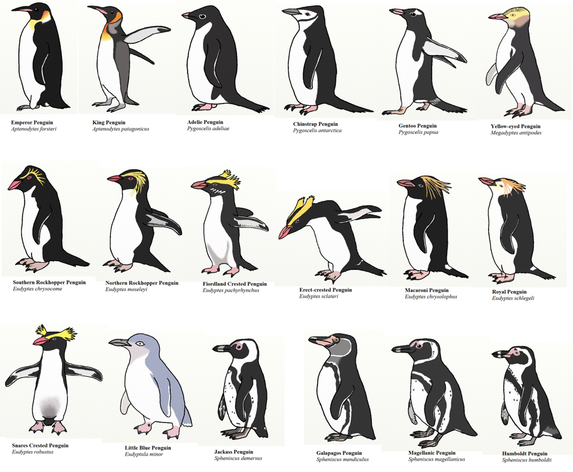
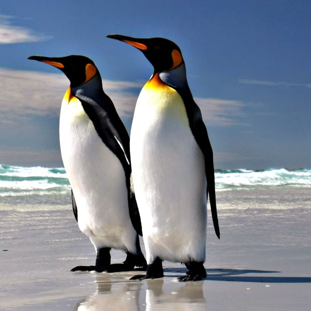
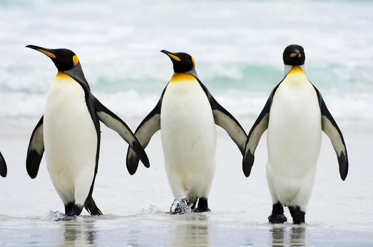
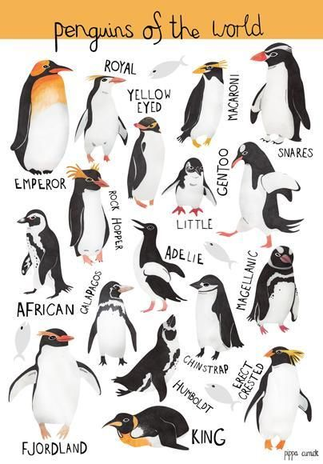
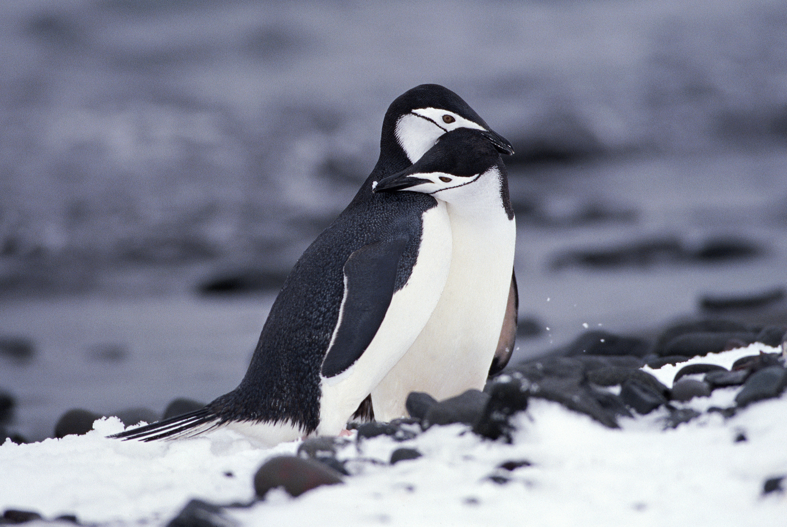
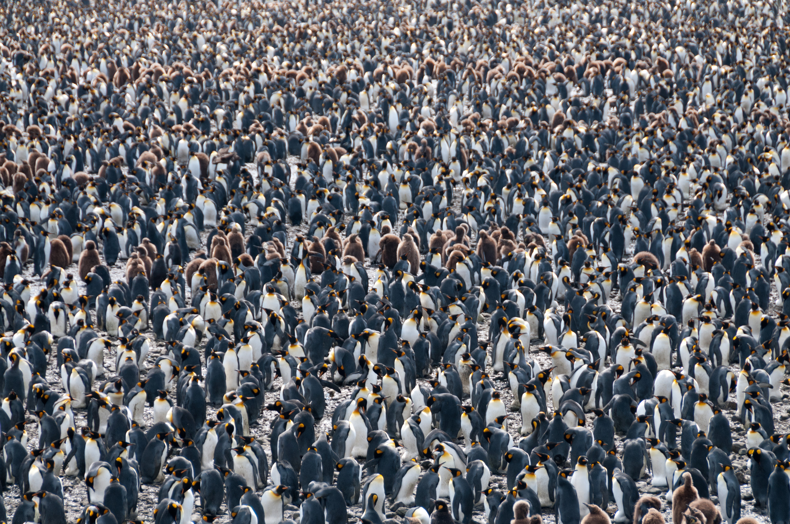
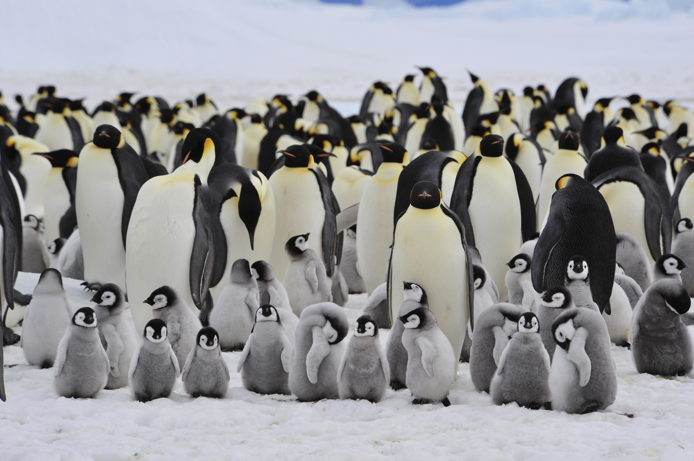
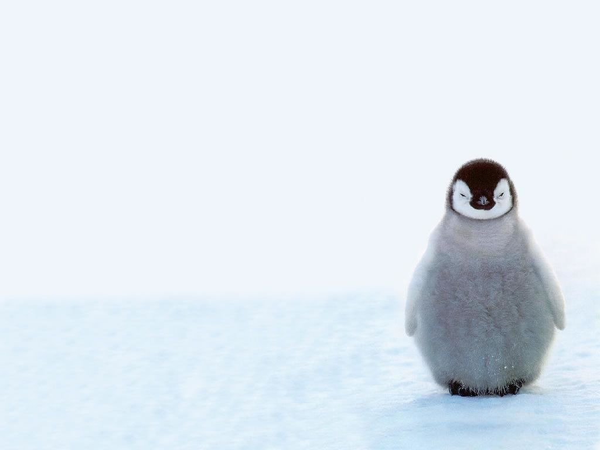

All the things you ever wanted to know about penguins...
But first a joke! How does a penguin build its house? Igloos it together.
1. All 17 species of penguins are found exclusively in the Southern Hemisphere.
2. Emperor Penguins are the tallest species, standing nearly 4 feet tall. The smallest is the Little Blue Penguin, which is only about 16 inches.
3. The fastest species is the Gentoo Penguin, which can reach swimming speeds up to 22 mph.
4. A penguin's striking coloring is a matter of camouflage; from above, its black back blends into the murky depths of the ocean. From below, its white belly is hidden against the bright surface.
5. Fossils place the earliest penguin relative at some 60 million years ago, meaning an ancestor of the birds we see today survived the mass extinction of the dinosaurs.
6. Penguins ingest a lot of seawater while hunting for fish, but a special gland behind their eyes—the supraorbital gland—filters out the saltwater from their blood stream. Penguins excrete it through their beaks, or by sneezing.
7. Unlike most birds—which lose and replace a few feathers at a time—penguins molt all at once, spending two or three weeks land-bound as they undergo what is called the catastrophic molt.
8. All but two species of penguins breed in large colonies of up to a thousand birds.
9. It varies by species, but many penguins will mate with the same member of the opposite sex season after season.
10. Similarly, most species are also loyal to their exact nesting site, often returning to the same rookery in which they were born.
11. Some species create nests for their eggs out of pebbles and loose feathers. Emperor Penguins are an exception: They incubate a single egg each breeding season on the top of their feet. Under a loose fold of skin is a featherless area with a concentration of blood vessels that keeps the egg warm.
12. In some species, it is the male penguin which incubates the eggs while females leave to hunt for weeks at a time. Because of this, pudgy males—with enough fat storage to survive weeks without eating—are most desirable.
13. Penguin parents—both male and female—care for their young for several months until the chicks are strong enough to hunt for food on their own.
14. If a female Emperor Penguin's baby dies, she will often "kidnap" an unrelated chick.
' 15. Despite their lack of visible ears, penguins have excellent hearing and rely on distinct calls to identify their mates when returning to the crowded breeding grounds.
16. The first published account of penguins comes from Antonio Pigafetta, who was aboard Ferdinand Magellan's first circumnavigation of the globe in 1520. They spotted the animals near what was probably Punta Tombo in Argentina. (He called them "strange geese.")
17. An earlier, anonymous diary entry from Vasco da Gama's 1497 voyage around the Cape of Good Hope makes mention of flightless birds as large as ducks.
18. Because they aren't used to danger from animals on solid ground, wild penguins exhibit no particular fear of human tourists.

19. Unlike most sea mammals—which rely on blubber to stay warm—penguins survive because their feathers trap a layer of warm air next to the skin that serves as insulation, especially when they start generating muscular heat by swimming around.
20. In the 16th century, the word penguin actually referred to great auks (scientific name: Pinguinus impennis), a now-extinct species that inhabited the seas around eastern Canada. When explorers traveled to the Southern Hemisphere, they saw black and white birds that resembled auks, and called them penguins.